Selected Publications [Full List]
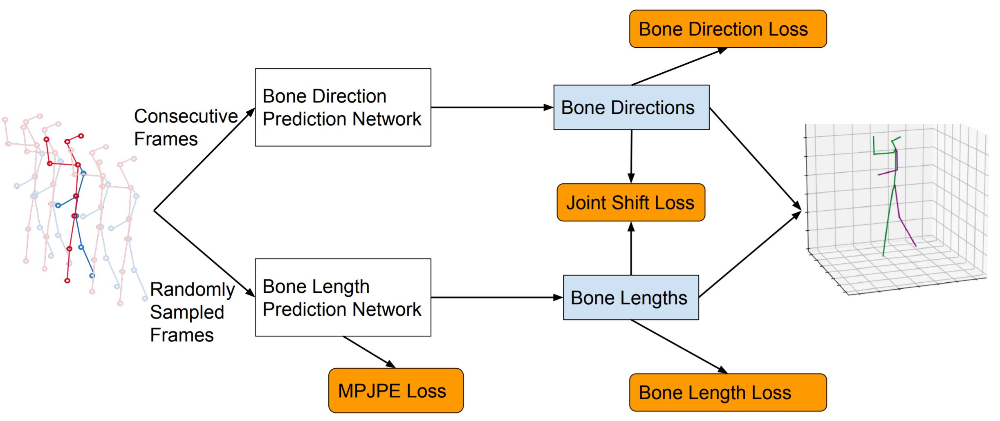
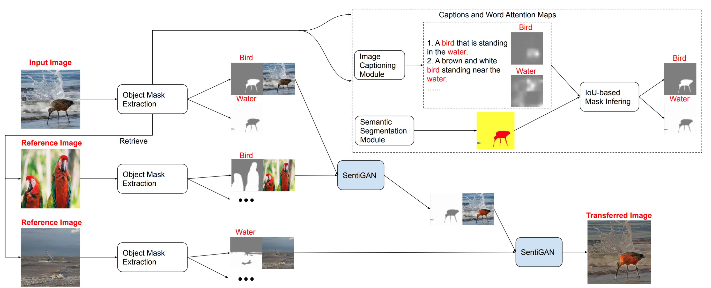
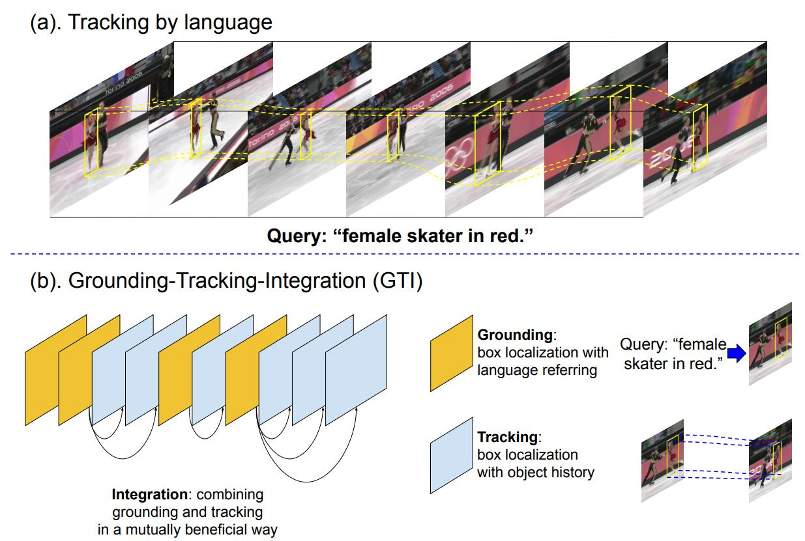
Grounding-Tracking-Integration
Zhengyuan Yang, Tushar Kumar, Tianlang Chen, Jingsong Su, Jiebo Luo
IEEE Transactions on Circuits and Systems for Video Technology [PDF]
Zhengyuan Yang, Tushar Kumar, Tianlang Chen, Jingsong Su, Jiebo Luo
IEEE Transactions on Circuits and Systems for Video Technology [PDF]

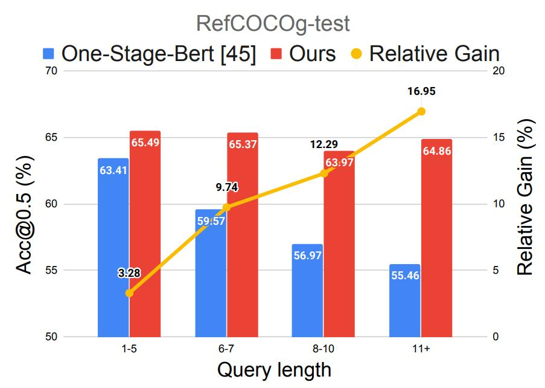
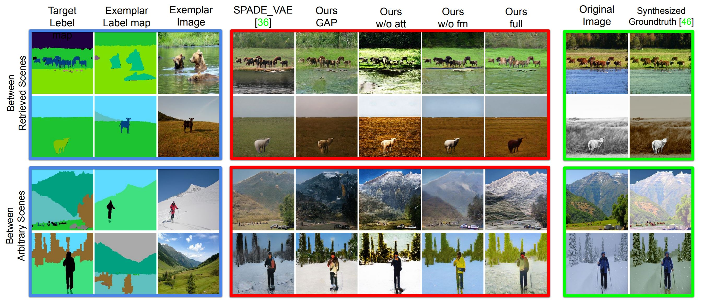
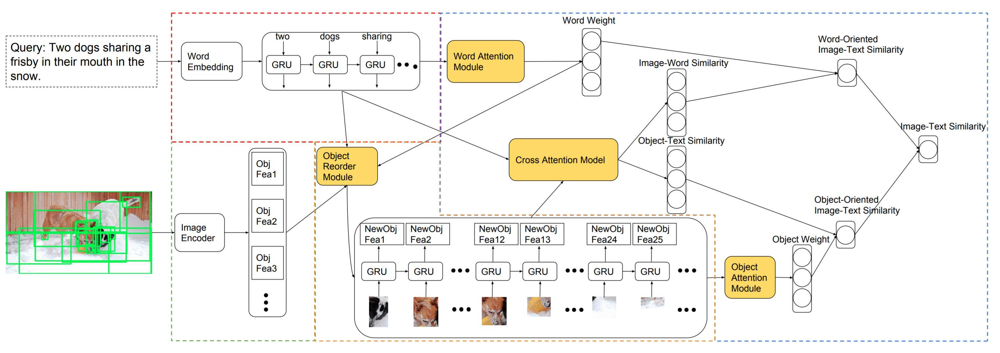
Expressing Objects just like Words: Recurrent Visual Embedding for Image-Text Matching
Tianlang Chen, and Jiebo Luo
AAAI Conference on Artificial Intelligence (AAAI), New York, NY, February 2020 [PDF],
Tianlang Chen, and Jiebo Luo
AAAI Conference on Artificial Intelligence (AAAI), New York, NY, February 2020 [PDF],
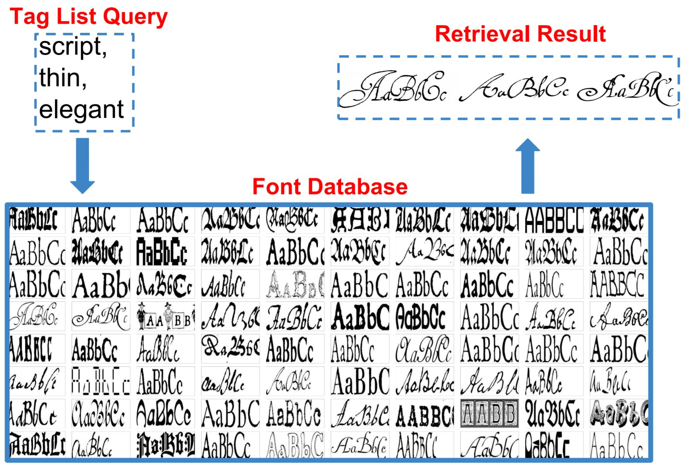
Adaptive Filtering for Event Recognition from Noisy Signal: an Application to Earthquake
Zhongping Zhang, Youzuo Lin, Zheng Zhou and Tianlang Chen
IEEE International Conference on Acoustics, Speech and Signal Processing (ICASSP), Brighton, UK, May 2019 [PDF],
Zhongping Zhang, Youzuo Lin, Zheng Zhou and Tianlang Chen
IEEE International Conference on Acoustics, Speech and Signal Processing (ICASSP), Brighton, UK, May 2019 [PDF],
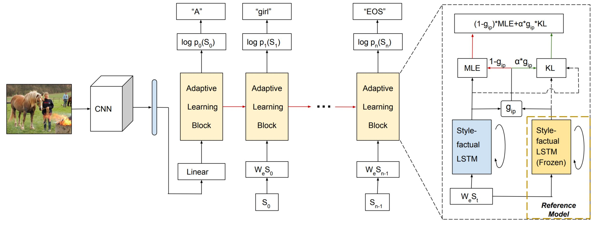
Factual or Emotional: Stylized Image Captioning with Adaptive Learning and Attention
Tianlang Chen, Zhongping Zhang, Quanzeng You, Chen Fang, Zhaowen Wang, Hailin Jin and Jiebo Luo
European Conference on Computer Vision (ECCV), Munich, Germany, September 2018 [PDF],
Tianlang Chen, Zhongping Zhang, Quanzeng You, Chen Fang, Zhaowen Wang, Hailin Jin and Jiebo Luo
European Conference on Computer Vision (ECCV), Munich, Germany, September 2018 [PDF],
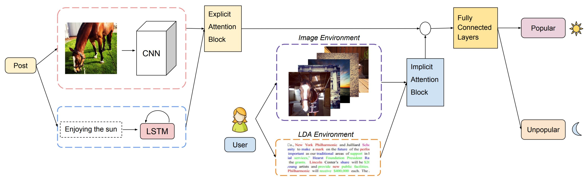
How to Become Instagram Famous: Post Popularity Prediction with Dual-Attention
Zhongping Zhang, Tianlang Chen, Zheng Zhou, Jiaxin Li, Jiebo Luo
IEEE International Conference on Big Data (Big Data), Seattle, WA, December 2018 [PDF],
Zhongping Zhang, Tianlang Chen, Zheng Zhou, Jiaxin Li, Jiebo Luo
IEEE International Conference on Big Data (Big Data), Seattle, WA, December 2018 [PDF],
You Type a Few Words and We Do the Rest: Image Recommendation for Social Multimedia Posts
Tianlang Chen, Yuxiao Chen, Han Guo, Jiebo Luo
IEEE International Conference on Big Data (Big Data), Seattle, WA, December 2018 [PDF],
Tianlang Chen, Yuxiao Chen, Han Guo, Jiebo Luo
IEEE International Conference on Big Data (Big Data), Seattle, WA, December 2018 [PDF],
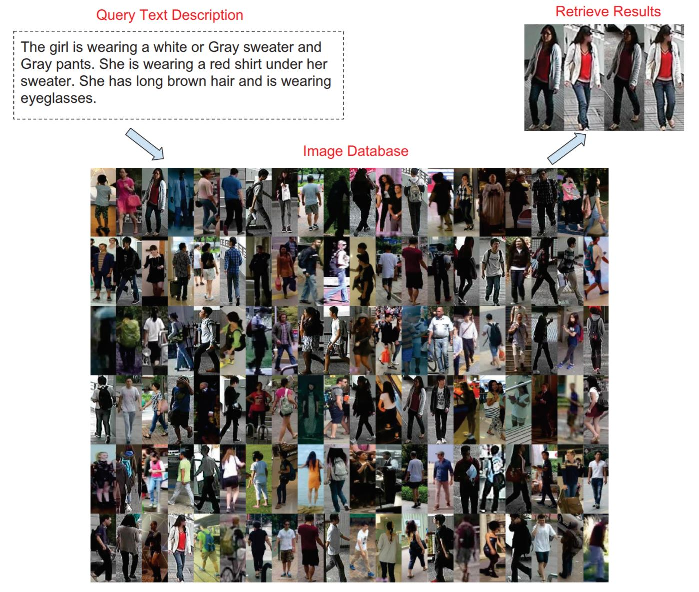
Improving Text-based Person Search by Spatial Matching and Adaptive Threshold
Tianlang Chen, Chenliang Xu, Jiebo Luo
Winter Conference on Computer Vision (WACV), Lake Tahoe, NV, March 2018 [PDF],
Tianlang Chen, Chenliang Xu, Jiebo Luo
Winter Conference on Computer Vision (WACV), Lake Tahoe, NV, March 2018 [PDF],
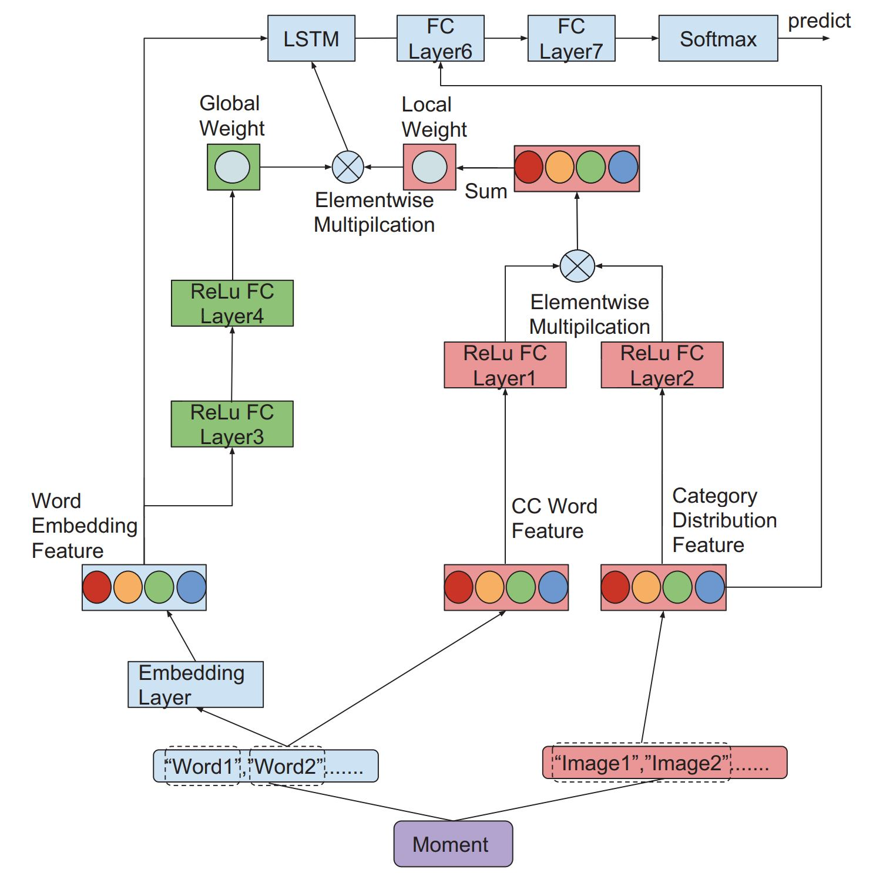
When E-commerce Meets Social Media: Identifying Business on WeChat Moment Using Bilateral-Attention LSTM
Tianlang Chen, Yuxiao Chen, Han Guo and Jiebo Luo
The Web Conference (WWW), Lyon, France, April 2018 [PDF],
Tianlang Chen, Yuxiao Chen, Han Guo and Jiebo Luo
The Web Conference (WWW), Lyon, France, April 2018 [PDF],
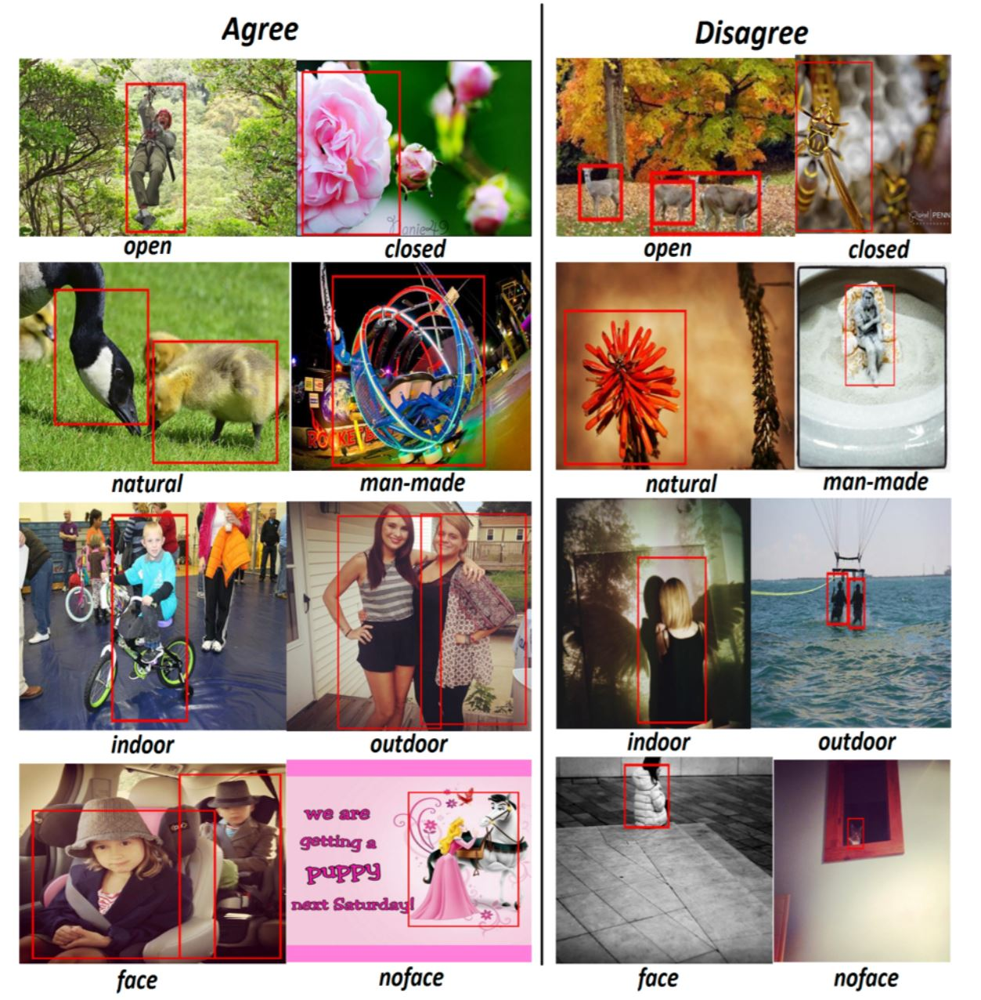
When Saliency Meets Sentiment: Understanding How Image Content Invokes Emotion and Sentiment
Honglin Zheng, Tianlang Chen, Quanzeng You, Jiebo Luo
International Conference on Image Processing (ICIP), Beijing, China, September 2017 [PDF],
Honglin Zheng, Tianlang Chen, Quanzeng You, Jiebo Luo
International Conference on Image Processing (ICIP), Beijing, China, September 2017 [PDF],
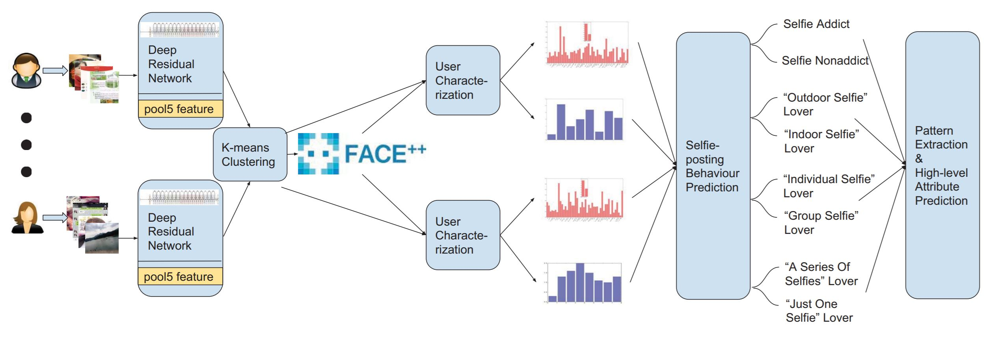
A Selfie is Worth a Thousand Words: Mining Personal Patterns behind User Selfie-posting Behaviours
Tianlang Chen, Yuxiao Chen and Jiebo Luo
World Wide Web Conference (WWW), Perth, Australia, April 2017 [PDF],
Tianlang Chen, Yuxiao Chen and Jiebo Luo
World Wide Web Conference (WWW), Perth, Australia, April 2017 [PDF],
Experience
- Research Intern (2020.5-2020.8), Google Research, Mountain View, CA
- Research Intern (2019.5-2019.8), ByteDance AI Lab, Palo Alto, CA
- Research Intern (2018.5-2018.8), Adobe Inc., San Jose, CA
- Research Intern (2017.5-2017.8), Tencent Youtu Lab, China
- Research Intern (2015.7-2015.9), Institute of Computing Technology (ICT), CAS, China